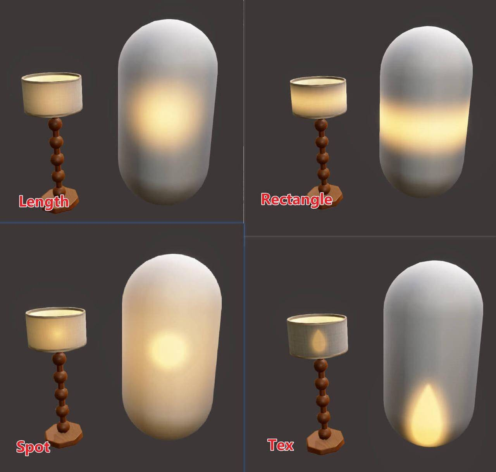

项目中经常用绘制Emission图来模仿灯光开灯后灯具透光的效果，但是部分透光效果（例如无论视角怎么转换始终在中心亮起）还是需要材质辅助才能实现。
本文为原创内容，转载请注明地址。
效果

原理
原理是，在视线空间中建立以物体朝向相机那一面为投影屏幕的垂直面，实时根据视角方向移动这一个投影面。再根据距离计算光照衰减，就可以做到无论怎么移动，都是中心亮起这一效果。
部分实现代码：
1
2
3
4
5
6
7
8
9
10
11
12
13
14
15
16
17
18
|
float3 newView = TransformWorldToObject(GetCameraPositionWS());
newView.y = 0;
newView = -normalize(newView);
float x0 = dot((input.positionOS-_CenterOffest.xyz),newView);
float3 H = input.positionOS-_CenterOffest.xyz + x0*newView;
float3 newY = float3(0,1,0);
float3 newX = cross(newView,float3(0,1,0));
float newXPos = dot(newX,H);
float newYPos = dot(newY,H);
output.LightPos = float2(newXPos,newYPos);
|
如果需要中心的形状呈现贴图定制的样式，只需要把距离映射成UV值就好
1
2
3
| float2 Oriuv = input.LightPos-_CenterOffest.xy;
float2 fakeUV = saturate((float2(0.5,0.5)+Oriuv*_FakeLightScale));
float3 fakeLightTex = SAMPLE_TEXTURE2D(_FakeLightTex, sampler_FakeLightTex, fakeUV);
|
扩展
实现了这个效果后的某天，在水知乎的时候发现了这篇文章：
如何在shader中找到一个平面用作UVcoordinates - 耶酱的文章 - 知乎 https://zhuanlan.zhihu.com/p/657240611
卧槽，原来实现的东西是UE自带的功能，不得不感叹UE的强大……